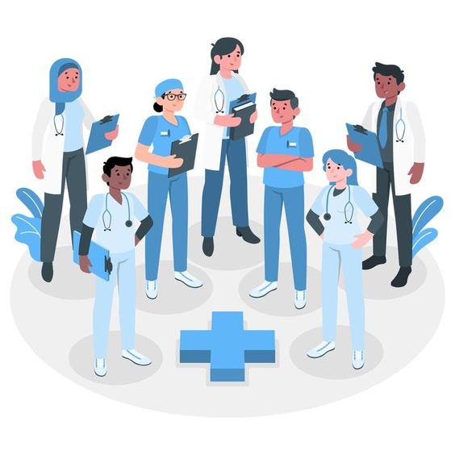
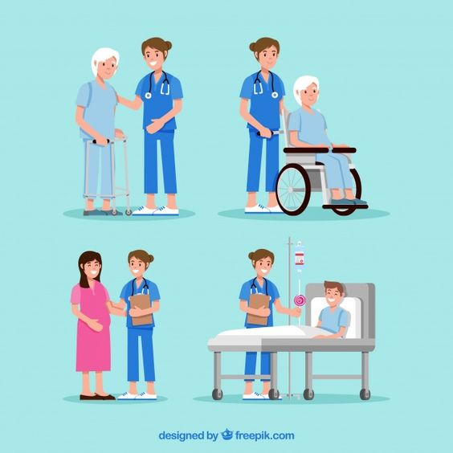

Selamat datang di Puskesmas Sukaraja

Temukan layanan kesehatan terbaik di Puskesmas Sukaraja.
Pelayanan ramah dan berkualitas untuk masyarakat.

Dokter & Perawat
Dokter & Perawat yang kompeten dalam bidangnya sehingga kami bisa membantu keluhan masyarakat.
Kebersihan
Kami selalu menjaga kebersihan pada puskesmas karna kebersihan itu awal dari kita mencegah segala penyakit.

Pelayanan
Kami memberikan pelayanan yang terbaik agar masyarakat merasa nyaman dan aman.
 puskesmas_sukaraja@example.com
puskesmas_sukaraja@example.com